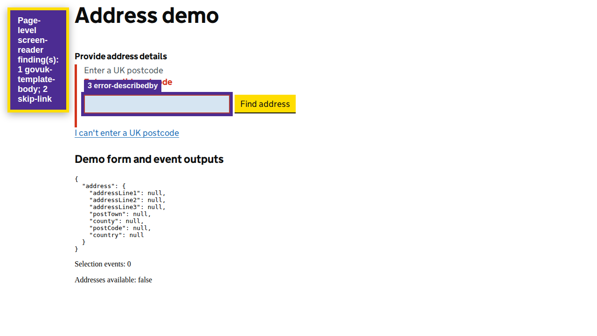

Automated heuristics support investigation; they do not replace screen-reader testing or establish WCAG conformance.
View page screenshot

1. govuk-template-body
The page should use the GOV.UK template body class during the template migration.
Selector: page
Inspect DOM snippet
2. skip-link
The page should expose a visible skip-to-main-content link.
Selector: page
Inspect DOM snippet
3. error-describedby
Invalid controls should reference the visible error message.
Selector: #postcodeInput
Inspect DOM snippet
<input _ngcontent-ng-c2332226571="" type="text" id="postcodeInput" name="postcode" formcontrolname="postcode" class="govuk-input govuk-!-width-one-third postcodeinput inline-block ng-untouched ng-pristine ng-valid govuk-input--error" style="">